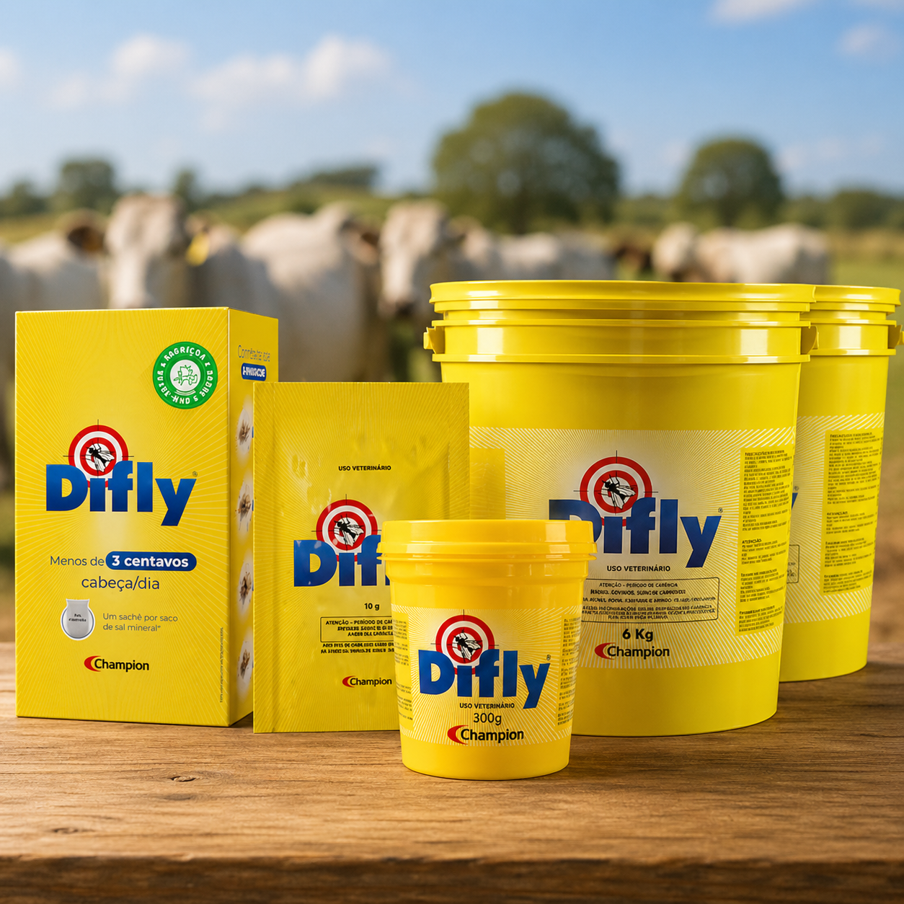
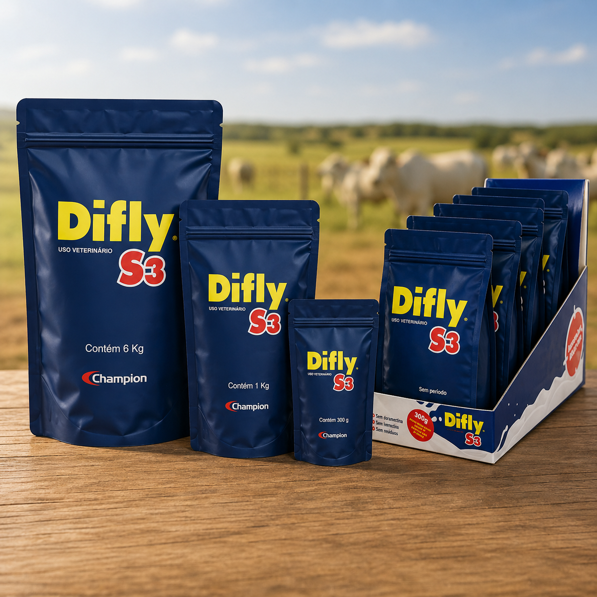

A mosca-dos-chifres (Haematobia irritans) é um dos parasitas que mais tira dinheiro do pecuário brasileiro. A boa notícia: com o controle certo, no momento certo, dá para reduzir drasticamente a infestação e proteger o ganho de peso do rebanho.
O que é a mosca-dos-chifres
A mosca-dos-chifres é uma mosca pequena, hematófaga (que se alimenta de sangue), que vive praticamente o tempo todo sobre o animal — concentrada no dorso, na cernelha e na base dos chifres, de onde vem o nome. Cada fêmea põe ovos no esterco fresco, onde as larvas se desenvolvem e dão origem a novas moscas em poucos dias. Esse ciclo curto explica por que a infestação cresce tão rápido nos períodos favoráveis.
Qual o prejuízo da mosca-dos-chifres no gado
O incômodo constante e as picadas levam o animal a gastar energia se defendendo (balançando a cabeça, batendo o rabo, procurando sombra) em vez de pastar e ganhar peso. Os principais impactos são:
- Queda no ganho de peso em bovinos de corte;
- Redução na produção de leite em vacas em lactação;
- Estresse e lesões de pele que abrem porta para outros problemas;
- Gasto recorrente quando o controle é feito só "apagando incêndio".
A partir de quantas moscas devo tratar?
A referência técnica mais usada é começar o controle quando a infestação ultrapassa cerca de 200 moscas por animal. Abaixo disso o impacto econômico costuma ser pequeno; acima, as perdas justificam a intervenção. Na prática, observe os animais: muitas moscas concentradas no lombo e bovinos inquietos são sinal de que passou da hora.
Quando a mosca-dos-chifres aparece
Os picos acontecem nos períodos quentes e úmidos (águas), quando há mais esterco fresco para a reprodução. Por isso a estratégia mais eficiente é antecipar: começar o controle ainda na transição da seca para as águas, antes da explosão populacional. Quem espera a infestação estourar corre atrás do prejuízo.
Regra de ouro: controle preventivo, na origem, custa menos do que tratar a infestação já instalada. Atuar no ciclo da larva impede que a próxima geração de moscas nasça.
Como controlar a mosca-dos-chifres
Existem três frentes que se complementam:
- Controle na origem (larvicida / regulador de crescimento no cocho): fornecido junto ao sal mineral ou à ração, age no esterco e impede o desenvolvimento das larvas. Não exige apartar o gado e mantém a proteção de forma contínua.
- Controle do adulto (pour-on, brincos, pulverização): atua sobre as moscas já presentes no animal. Útil em picos, mas exige manejo e tem efeito mais pontual.
- Manejo: rotação de pasto e atenção ao acúmulo de esterco ajudam a reduzir os criadouros.

Difly — controle no cocho, na origem
Larvicida fornecido no sal/ração que atua no ciclo da mosca-dos-chifres sem estresse de manejo. Consulte a bula para dose por cabeça.
Ver o Difly
Difly S3 — quando há mosca + carrapato
Ação ampliada para propriedades que enfrentam mais de um parasita ao mesmo tempo. Veja a indicação completa na página do produto.
Ver o Difly S3Larvicida de cocho x pour-on: qual escolher?
Não é "um ou outro" — são papéis diferentes. O larvicida de cocho trabalha na prevenção, cortando o ciclo na origem com uso contínuo e sem manejo. O pour-on é uma resposta rápida ao adulto, boa para picos pontuais. Combinar as duas estratégias, com rotação de princípios ativos, é o que ajuda a evitar a resistência e manter o controle ao longo do ano.
Perguntas frequentes
A partir de quantas moscas devo tratar o gado?
A referência técnica é iniciar o controle acima de cerca de 200 moscas por animal — ponto em que as perdas em peso e leite passam a pesar. Avalie com o seu responsável técnico.
Larvicida de cocho deixa resíduo no leite ou na carne?
Depende do produto. Siga sempre a carência e as restrições da bula/rótulo e, em caso de dúvida com vaca em lactação, consulte o responsável técnico ou a equipe Champion.
Quando começar o controle?
Antes do pico: na transição da seca para as águas. Antecipar evita a explosão populacional e custa menos do que remediar.
O controle no cocho funciona sem apartar o gado?
Sim. O larvicida de cocho é fornecido no sal/ração e mantém a proteção de forma contínua, sem necessidade de manejo dos animais.